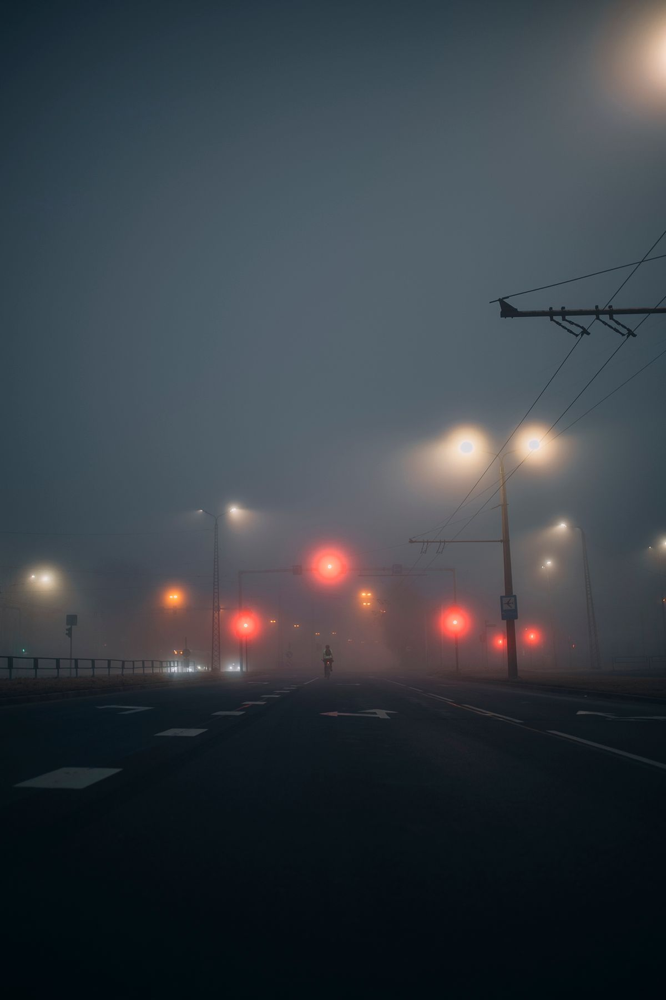

Production 01 · 2024
Season Two — The Hollow Season
The ask
Season One was recorded entirely indoors, and listeners kept writing the same letter: where is this place? The season had a voice but no geography. Season Two had to give the Hollow a map.
What was done
Twelve stories written around twelve real Hudson Valley locations, with foley gathered on site — the causeway, the bell field, the night orchard. Narration stayed in the closet; everything else went outside.
The outcome
Average downloads nearly doubled, from 8,000 to 15,000 per episode. The season brought the show its first sponsor and its first invitation to perform live — the two mid-roll slots marked sold in the ledger (E2.02, E2.09) were this season’s.
“Maren’s second season is the first podcast I have heard that treats silence like a cast member. I stole her restraint for my own programme, and my listeners wrote in to thank me.”